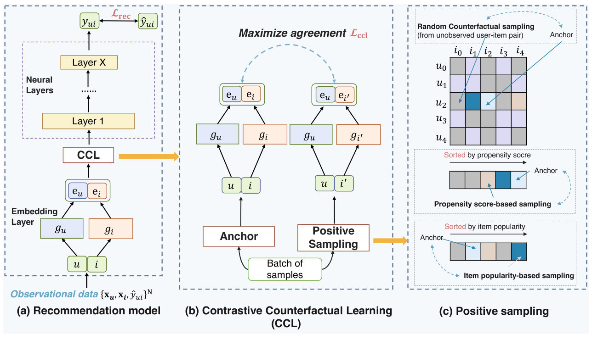

Contrastive Counterfactual Learning for Causality-aware Interpretable Recommender Systems (因果感知可解释推荐系统的对比反事实学习)
- 会议/期刊: CIKM 2023
- 作者与机构: Guanglin Zhou, Chengkai Huang, Xiaocong Chen (UNSW)；Xiwei Xu, Chen Wang, Liming Zhu (Data61/CSIRO)；Lina Yao (Data61/CSIRO & UNSW)
- 推荐链路定位: 精排/通用排序（评分预测与 Top-N 排序）
- 研究方向: 去偏公平与工业系统 / 自监督对比学习与交互去噪
- 论文原文: 论文原文链接
- 开源代码: 开源代码仓库链接
TL;DR (1分钟核心速览)
曝光机制导致观测反馈的 MLE 有偏，现有 IPS 降偏但方差大、CVIB 缺乏显式曝光建模。本文用因果图定位隐藏混杂 \(Z\to I\)，提出 CCL：以 IPS 等价的正例采样与反事实正例扩展做对比自监督。在 Coat/Yahoo! R3 无偏测试集全库排序上，CCL 的 NDCG@10 较最强基线最高提升 1.2%，并显著降低 Gini。
Background & Motivation (背景与核心矛盾)
- 主流范式: 将推荐视为 causal treatment，用 IPS/SNIPS/DR 对观测交互重加权，或用 CVIB 等信息瓶颈方法学习无偏表征。
- 前人局限: IPS 类方法依赖倾向得分估计，方差与稳定性差；RCT 无偏数据在真实场景难获得；信息瓶颈方法未显式建模“曝光”这一数据生成机制。
- 核心洞察 (Key Insight): 因果图中 \(Z\to I\)与\(Z\to Y\)使\(X\leftarrow Z\to Y\)后门路径未阻断，仅拟合\(P(Y|X)\) 会学到曝光假象；在表征空间模拟“均匀曝光”可近似干预。
- 本文切入点: 用对比 SSL 的正例采样替代/补充 IPS 重加权，并通过扩大反事实正例集逼近全物品集。
Method (核心方法设计)
1. 整体框架 (Overall Architecture)
模型输入用户/物品原始特征，经 \(g_u,g_i\)编码并拼接为\(h_{u,i}\)，再由 MLP\(f(\cdot)\)预测偏好并计算\(\mathcal{L}_{rec}\)。同时，对每个 batch 样本\(x_k\)用三种反事实正采样器\(t\sim\mathcal{T}\)生成正视图，构造\(2N\)个视图并用 InfoNCE 计算\(\mathcal{L}_{ccl}\)。总损失联合优化，推理阶段只保留编码器与 MLP，不执行采样。
flowchart TD
A["用户/物品原始特征"] --> B["编码并拼接 h"]
B --> C["MLP 预测 L_rec"]
A --> D["反事实正采样 ps/pop/cf"]
D --> E["双视图 InfoNCE L_ccl"]
C --> F["总损失 L=L_rec+λL_ccl"]
E --> F
2. 关键设计拆解 (Key Designs)
- 曝光混杂的因果解释与 CCL 等价性：常规 \(\mathcal{L}_{MLE}\)只在\(O_{u,i}=1\)上计算，\(\mathbb{E}[\mathcal{L}_{MLE}]\neq\mathcal{L}_{full}\)。作者通过\(Z\to I\)阻断将“去曝光偏置”转化为表征空间均匀曝光；当正例分布取\(p_{pos}=1/P_{u,i}\)且负例覆盖物品集时，对比损失退化为 IPS 型目标：\(\mathcal{L}_{con}\propto-\sum_{(u,i)\in D}\frac{1}{P_{u,i}}\log p_\theta(i|u)\)。这为“正例采样即去偏”提供了依据。
- 三种反事实正采样器：①倾向得分采样：固定用户，选与其倾向得分差异最大的物品，模拟均匀曝光；②物品流行度采样：以 \(\text{pop}_i=\sqrt{\#interactions_i/\max_j\#interactions_j}\) 替代难估的倾向得分，选流行度差异最大的物品；③随机反事实采样：直接取同一用户未曝光物品作为正例。前两者依赖曝光估计，后者无需倾向得分且实证最优。
- 训练目标、负采样与推理效率：CCL 损失为 \(\ell_{ccl}(a,p)=-\log\frac{\exp(sim(\tilde h_a,\tilde h_p)/\tau)}{\sum_{m=1}^{2N}\mathbb{I}[m\neq a]\exp(sim(\tilde h_a,\tilde h_m)/\tau)}\)，总目标\(\mathcal{L}=\mathcal{L}_{rec}+\lambda\mathcal{L}_{ccl}\)。正例由采样器生成，负例来自同 batch 其余\(2N-1\)个视图；推理无额外采样开销，但训练需\(2N\) 视图存储。
Experimental Setup & Evaluation Protocol (实验设置与评估协议)
- 数据集与预处理:
| 数据集 | #Users | #Items | #Interactions | 稀疏度/密度 | 特征/场景说明 |
|---|---|---|---|---|---|
| Coat | 290 | 300 | 6,960 训 / 4,640 无偏测 | 训练密度约 8.0% | 5 星评分，≥3 判为正反馈 |
| Yahoo! R3 | 15.4K 训 / 5.4K 测 | — | 300K+ 训 / 54K 无偏测 | 极稀疏 | 用户-歌曲评分；无偏测试用户随机评 10 首 |
- 数据划分与防穿越: Coat 每用户 24 条自选训练 + 16 条随机曝光测试；Yahoo! R3 自选训练 + 5,400 用户各 10 条随机测试。属于随机曝光测试集，非 Leave-One-Out。
- 排名评测协议: 无偏测试集上全物品候选 Top-N 排序（Full-Ranking），未采用采样负例评估；报告 NDCG、Recall、MRR、Gini 与 Global Utility。
- 对比基线与超参: 对比 MF/NCF/LightGCN 及 IPS/SNIPS/DR/CVIB 等 10 个基线；\(d\in\{4,8,16,32,64\}\)，层数\(\{1,2,3\}\)，batch\(\{512,1024,2048,4096\}\)，\(\lambda\in[0.5,1.5]\)，\(\tau\in[0.1,1.5]\)；10 次运行，显著性\(p<0.05\)。
Key Experimental Results (实验关键数据)
1. 主实验对比 (Main Results)
| 数据集 | 方法 | NDCG@5 | NDCG@10 | Recall@5 | MRR | Gini↓ |
|---|---|---|---|---|---|---|
| Coat | MF | 0.6189 | 0.6858 | 0.4706 | 0.7241 | 0.3286 |
| Coat | MF+IPS | 0.5461 | 0.6423 | 0.4453 | 0.6960 | 0.3704 |
| Coat | MF+SNIPS | 0.6195 | 0.6933 | 0.4725 | 0.7024 | 0.3354 |
| Coat | MF+DR | 0.6102 | 0.6831 | 0.4586 | 0.7236 | 0.3358 |
| Coat | MF+CVIB | 0.6356 | 0.7066 | 0.4858 | 0.7534 | 0.3339 |
| Coat | NCF+CVIB | 0.6275 | 0.7025 | 0.4881 | 0.7426 | 0.3413 |
| Coat | CCL w/cf | 0.6461 | 0.7151 | 0.4907 | 0.7550 | 0.3127 |
| Yahoo! R3 | MF | 0.6347 | 0.7629 | 0.6678 | 0.4364 | 0.5822 |
| Yahoo! R3 | MF+IPS | 0.6461 | 0.7654 | 0.7006 | 0.4309 | 0.5571 |
| Yahoo! R3 | MF+SNIPS | 0.6384 | 0.7640 | 0.6837 | 0.4324 | 0.5656 |
| Yahoo! R3 | MF+DR | 0.6562 | 0.7729 | 0.7046 | 0.4443 | 0.5576 |
| Yahoo! R3 | MF+CVIB | 0.6961 | 0.7992 | 0.7388 | 0.4840 | 0.5411 |
| Yahoo! R3 | NCF+CVIB | 0.6675 | 0.7810 | 0.7161 | 0.4565 | 0.5478 |
| Yahoo! R3 | CCL w/cf | 0.6967 | 0.7997 | 0.7400 | 0.4873 | 0.5378 |
相对最强非 CCL 基线：Coat 的 NDCG@5/NDCG@10/Recall@5/MRR 分别 +1.65%/+1.20%/+0.53%/+0.21%，Gini 相对降 6.35%；Yahoo! R3 分别 +0.08%/+0.06%/+0.16%/+0.69%，Gini 相对降 0.63%。评分预测上 Coat AUC 0.774 高于 NCF+DR 的 0.768，Yahoo AUC 0.702 低于 MF+CVIB 的 0.710，存在排序-评分权衡。
2. 消融实验 (Ablation Study)
| 数据集 | 变体 | NDCG@10 | Recall@5 | MRR | Gini↓ | AUC↑ |
|---|---|---|---|---|---|---|
| Coat | 仅 \(\mathcal{L}_{rec}\) | 0.690 | 0.448 | 0.738 | 0.334 | 0.761 |
| Coat | \(\mathcal{L}_{rec}+\mathcal{L}_{ccl}\) | 0.715 | 0.491 | 0.755 | 0.313 | 0.774 |
| Yahoo! R3 | 仅 \(\mathcal{L}_{rec}\) | 0.736 | 0.647 | 0.387 | 0.585 | 0.701 |
| Yahoo! R3 | \(\mathcal{L}_{rec}+\mathcal{L}_{ccl}\) | 0.800 | 0.740 | 0.487 | 0.538 | 0.702 |
正采样策略对比（NDCG@5 / Recall@5）：Coat 为 w/o SSL 0.6087/0.4484，w/pop 0.6144/0.4611，w/ps 0.6314/0.4782，w/cf 0.6461/0.4907；Yahoo! R3 为 0.5960/0.6467、0.6852/0.7302、0.6852/0.7302、0.6967/0.7400。
3. 关键实验发现 (Key Findings)
- 移除 CCL 后 Yahoo! R3 的 Recall@5 从 0.740 降至 0.647、NDCG@10 从 0.800 降至 0.736；Coat NDCG@5 从 0.646 降至 0.609，说明增益主要来自曝光去偏而非 MLP 容量。
- 随机反事实采样最优：Yahoo! R3 NDCG@5 0.6967，高于倾向得分采样的 0.6852 与无 SSL 的 0.5960，表明扩大并多样化正例集比精确估计倾向得分更关键。
- Gini 下降（Coat 0.334→0.313；Yahoo 0.585→0.538）同时 Global Utility 提升，表征空间曝光更均匀；但 Yahoo AUC 略低于 CVIB，提示排序公平与评分校准需折中。
Highlights & Limitations (亮点、对比与审稿批判)
- 与代表作对比 (vs. Prior Work): IPS/SNIPS 通过重加权纠偏，易引入高方差；CVIB 用信息瓶颈学无偏表征，但未显式建模曝光；SGL 类图增广面向协同图结构，本文直接用“未曝光反事实对”作正例，针对曝光混杂更直接。
- 可迁移亮点: 将反事实/未曝光物品作为对比正例，可低成本注入曝光均匀先验；三种采样器可作为插件接入 MF/NCF/MLP 等排序模型。
- 审稿级局限批判: 随机反事实采样把未交互对当正例，可能引入假阳性，尤其用户本就不喜欢的物品；仅两个基准且无大型工业验证，w/ps 与 w/pop 对倾向得分/流行度估计较敏感，训练需 \(2N\) 视图增加显存开销。
Rating (四维评分)
- 方法创新性 (Novelty): ⭐⭐⭐⭐ （因果图+IPS 等价推导+三类反事实正采样，机制清晰且有理论衔接）
- 评估协议与实验扎实度 (Protocol & Experiments): ⭐⭐⭐⭐ （两个无偏测试基准、10 个基线、10 次运行与 \(p<0.05\)，但数据集规模与场景仍有限）
- 写作与数学规范度 (Clarity & Rigor): ⭐⭐⭐⭐ （从 MLE 偏置到对比损失退化的推导完整，但“可解释性”更多停留在因果图层面）
- 工业落地与复现价值 (Industrial & Practical Value): ⭐⭐⭐ （代码开源、推理零采样开销；训练需 2N 视图，随机反事实正例的假阳性风险需线上验证）